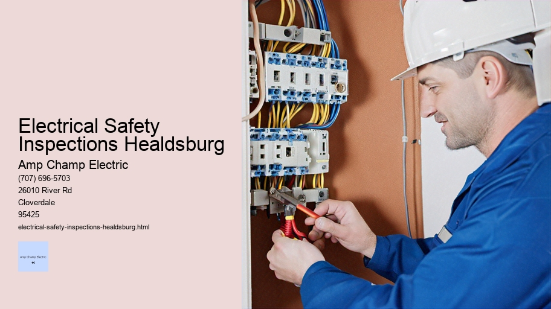

News
Electrical Installation Healdsburg
Electrical Installation Healdsburg
Electrical Installation Santa Rosa
Electrical Installation Cloverdale
Electrical Installation Geyserville
Electrical Installation Windsor
Maintenance and Repair Services Healdsburg
Maintenance and Repair Services Healdsburg
Maintenance and Repair Services Santa Rosa
Maintenance and Repair Services Cloverdale
Maintenance and Repair Services Geyserville
Maintenance and Repair Services Windsor
Electrical Safety Inspections Healdsburg
Electrical Safety Inspections Healdsburg
Electrical Safety Inspections Santa Rosa
Electrical Safety Inspections Cloverdale
Electrical Safety Inspections Geyserville
Electrical Safety Inspections Windsor
Energy Efficiency Upgrades Healdsburg
Energy Efficiency Upgrades Healdsburg
Energy Efficiency Upgrades Santa Rosa
Energy Efficiency Upgrades Cloverdale
Energy Efficiency Upgrades Geyserville
Energy Efficiency Upgrades Windsor
Specialty Electrical Services Healdsburg
Specialty Electrical Services Healdsburg
Specialty Electrical Services Santa Rosa
Specialty Electrical Services Cloverdale
Specialty Electrical Services Geyserville
Specialty Electrical Services Windsor
About Us
Contact Us

Electrical Safety Inspections Healdsburg
Electrical Safety Standards
Title: The Importance of Regular Electrical Safety Inspections
In the modern world, electricity is an indispensable part of our daily lives. It lights our homes, powers our appliances, and drives countless devices that make our existence more comfortable and efficient. However, with such reliance on electrical systems comes a significant responsibility to ensure their safety and functionality. Electrical safety inspections are a critical aspect of maintaining a secure environment for both residential and commercial settings.
Firstly, it’s essential to understand what an electrical safety inspection entails. This process involves a thorough examination of an establishment's electrical system by a certified electrician or inspector. The purpose is to identify any potential hazards such as outdated wiring, faulty electrical components, improper connections, or overloaded circuits that could lead to electric shock, fires, or other dangerous situations.
One of the primary reasons for conducting regular electrical safety inspections is the prevention of accidents. According to statistics from various fire departments and safety councils, many domestic fires are caused by electrical malfunctions which could have been prevented with proper checks in place. By identifying issues early on through systematic inspections, homeowners can take corrective actions before they escalate into emergencies.
Home Electrical Safety Audit
Furthermore, these inspections help in ensuring compliance with building codes and regulations that govern electrical installations. Building codes evolve over time as new technologies emerge and older ones become obsolete; therefore keeping up-to-date with current standards is crucial for both legal compliance and operational efficiency.
For homeowners planning renovations or extensions to their property, electrical safety inspections become even more vital. Any changes made to the structure of a home may affect its existing electrical layout; hence it’s important to ensure that all modifications meet the required safety standards.
In addition to safeguarding against physical harm and property damage, regular inspections can also save money in the long run. An optimized and well-maintained electrical system operates more efficiently than one burdened by undetected faults or aging components—this translates into lower energy bills due to reduced power wastage.
Electrical safety inspections should not be seen as an unnecessary expense but rather as an investment in peace of mind. Knowing your home or business meets high safety standards provides comfort not just for you but also for your family members or employees who depend on safe living and working environments every day.
It must be noted though that while routine inspections play a pivotal role in maintaining safe premises they do not eliminate the need for vigilance amongst occupants themselves. Homeowners should regularly check their appliances for signs of wear-and-tear such as frayed cords or flickering lights which might indicate underlying issues requiring immediate attention from professionals.
To conclude, regular electrical safety inspections are paramount in protecting lives and properties from the risks associated with electricity usage. They serve as proactive measures against potential hazards while promoting energy efficiency and regulatory compliance—an absolute necessity given our deep dependence on this powerful yet hazardous utility called electricity.
Electrical Safety Inspections Santa Rosa
Home Electrical Safety Assessments: A Crucial Step for Household Safety
In the modern home, electricity is a fundamental aspect of daily life.
Electrical Safety Inspections Healdsburg - Transformer Installation and Maintenance
Emergency Electrician
Electrician Training and Certification
Motion Sensors
Harmonic Filtration
It powers our appliances, charges our devices, and lights up our living spaces. Yet despite its pervasive presence and invaluable benefits, electricity can pose significant risks if not managed properly. Home electrical safety assessments are crucial in identifying potential hazards and ensuring that households operate within the realms of safety and efficiency.
Why Conduct Home Electrical Safety Assessments?
The primary goal of a home electrical safety assessment is to prevent accidents that could lead to property damage, injury, or even fatalities. According to the Electrical Safety Foundation International (ESFI), electrical fires account for a substantial number of domestic fires each year. These fires often result from faulty wiring, overloaded circuits, or the misuse of electrical devices.
A comprehensive assessment helps homeowners understand their current electrical systems' condition and identify areas requiring immediate attention or future monitoring. The process involves evaluating the integrity of wiring systems, testing circuit breakers and outlets for proper operation, scrutinizing the functionality of light fixtures, examining any signs of wear on cords and plugs, and assessing the overall electrical load on the system.
Components of a Home Electrical Safety Assessment
A thorough assessment encompasses several key components:
1. **Visual Inspection:** This involves checking for exposed wires; loose connections; evidence of burning around sockets or switches; discoloration on outlets; cracks in device casings; water exposure near electrical sources; and outdated equipment such as fuse boxes instead of modern circuit breakers.
2. **Testing Devices:** Ground fault circuit interrupters (GFCIs) and arc-fault circuit interrupters (AFCIs) should be tested regularly to ensure they are functioning correctly as they play critical roles in preventing electrocution and fires.
3. **Circuit Evaluation:** A professional electrician can assess whether circuits are overloaded – a common issue when older homes are filled with modern electronics without corresponding upgrades to their electrical infrastructure.
4. **Appliance Check:** Large appliances require periodic checks as well because they consume significant power which may strain an old system or if improperly installed could become hazardous.
5. **Safety Device Verification:** Smoke detectors and carbon monoxide alarms save lives but only if they're working properly – part of an assessment should include testing these devices to guarantee they're operational.
Who Should Perform Home Electrical Safety Assessments?
While some basic checks can be performed by homeowners themselves – such as testing GFCI outlets or ensuring smoke detectors function – a comprehensive evaluation should be conducted by licensed electricians who possess extensive knowledge about building codes, standards for safe installation practices, and an eye for detail that comes from experience.
Frequency of Home Electrical Safety Assessments
It's advisable for homeowners to conduct formal assessments every few years – more frequently if living in an older property or following major renovations involving electrical work. After natural disasters like floods or earthquakes where wiring might have been compromised assessments should also be prioritized.
Implementing Recommendations from Assessments
Once identified issues must be promptly addressed – this might involve simple actions like removing daisy-chained extension leads through complex rewiring projects handled by professionals it's important not delay repairs due potential risks involved with defective electrics moreover energy inefficiency detected during these evaluations provide opportunities retrofitting LED lighting smart thermostats other measures contribute cost savings long-term sustainability goals household thus transforming mere corrective exercise into proactive step towards greener living space
Conclusion
In conclusion performing regular home electrical safety assessments stands as guardian against latency hazards lurking behind walls beneath floors within everyday conveniences we take granted vigilance combined expertise pave way creating secure environment loved ones while simultaneously enhancing performance reliability domicile's nerve center beside inherent security benefits practice encourages responsible energy usage contributes broader societal push towards conscious consumption stewardship planet resources recognition necessity coupled action reinforcement cornerstone cultivating culture prevention preparedness residential contexts ensure remains welcoming haven rather source unwelcome surprises dangers
electrical-installation-healdsburg.html
electrical-installation-santa-rosa.html
electrical-installation-cloverdale.html
electrical-installation-geyserville.html
electrical-installation-windsor.html
maintenance-and-repair-services-healdsburg.html
maintenance-and-repair-services-santa-rosa.html
maintenance-and-repair-services-cloverdale.html
maintenance-and-repair-services-geyserville.html
maintenance-and-repair-services-windsor.html
electrical-safety-inspections-healdsburg.html
electrical-safety-inspections-santa-rosa.html
electrical-safety-inspections-cloverdale.html
electrical-safety-inspections-geyserville.html
electrical-safety-inspections-windsor.html
energy-efficiency-upgrades-healdsburg.html
energy-efficiency-upgrades-santa-rosa.html
energy-efficiency-upgrades-cloverdale.html
energy-efficiency-upgrades-geyserville.html
energy-efficiency-upgrades-windsor.html
specialty-electrical-services-healdsburg.html
specialty-electrical-services-santa-rosa.html
specialty-electrical-services-cloverdale.html
specialty-electrical-services-geyserville.html
specialty-electrical-services-windsor.html
privacy-policy.html
sitemap.html
sitemap.xml
about-us.html
feed.xml
Compliance checks with local codes and standards
Compliance Checks with Local Codes and Standards: Ensuring Safety and Consistency in Our Built Environment
In the intricate weave of modern society, compliance checks with local codes and standards stand as critical threads maintaining the integrity and safety of our built environment. These checks are not merely bureaucratic hoops through which businesses and builders must jump; they represent a collective agreement upon minimum conditions necessary to ensure that structures are safe, accessible, and sustainable for both current users and future generations.
Local building codes and standards serve as rulebooks written by experts that outline the best practices in construction, design, electrical systems, plumbing, fire protection, energy efficiency, accessibility for individuals with disabilities, environmental conservation, zoning requirements, and much more. Compliance with these rules is not optional but mandatory - it's the law of the land determined by local authorities who understand their community's unique needs.
The necessity of such regulation cannot be overstated. Without these codes and standards in place – or without stringent adherence to them – we increase risks related to health hazards from substandard materials or improper waste disposal; injury due to structural failures or inadequate fire safety measures; economic loss from inefficient energy use or poor planning; even environmental damage due to unsustainable practices.
Conducting compliance checks is an ongoing process that begins at the earliest stages of planning. Architects and engineers must familiarize themselves with current local codes before putting pen to paper on new projects. As designs take shape into concrete form through construction or renovation efforts, inspectors arrive on-site at various project milestones to verify that work complies with stipulated regulations.
These professionals carry immense responsibility on their shoulders: their diligence prevents corners from being cut where it matters most. They enforce quality control by identifying potential issues early when they are easier (and often cheaper) to address rather than after completion when corrections might be costly or even impossible.
Moreover, compliance checks cover a vast array of considerations beyond mere physical safety. For instance:
- Zoning laws ensure harmony between different types of land use so that residential areas aren't unduly affected by industrial activities.
- Accessibility standards guarantee everyone can navigate public spaces regardless of disability status.
- Energy regulations help combat climate change by ensuring buildings operate efficiently.
It’s important also to acknowledge how compliance affects us economically.
Electrical Safety Standards
Meeting code requirements adds value not only through enhanced safety but also via improved marketability for properties adhering strictly to high standards—a boon for owners looking towards resale or leasing.
However cumbersome they may seem at times—especially when trying to innovate within what feels like strict confines—the purpose behind these codes becomes clear in their absence: unchecked development prone to accidents waiting to happen without regard for community impact.
We should view each checkmark on a code inspector's clipboard as a tiny victory: one less hazard in our daily lives—one step closer towards harmonious living spaces designed thoughtfully around human needs. The ultimate goal? To inhabit environments where trust is built into every wall raised because we know those walls were constructed according to codes meant precisely for our protection.
In conclusion, while some may see compliance checks as red tape hindering progress or creativity within development sectors—when we look deeper—we find them essential safeguards upholding societal values across aesthetics and practicality alike. By respecting local codes and standards through rigorous compliance checks today, we lay down foundations upon which safer communities will flourish tomorrow.
Testing of GFCI outlets and breakers
Testing of GFCI Outlets and Breakers: Ensuring Electrical Safety in Our Homes
The modern home is a labyrinth of electrical appliances and systems, each designed to make our lives more comfortable and convenient. But with the luxury of electricity comes the potential for danger, especially when it involves water or moisture. That's where Ground Fault Circuit Interrupter (GFCI) technology becomes essential. GFCIs are critical safety devices that protect us from electric shock, which can result from ground faults where unintended electrical paths divert current to ground. These devices monitor the balance of electrical current moving through a circuit and rapidly cut off the power when they detect a ground fault. To ensure these life-saving devices are working correctly, regular testing of GFCI outlets and breakers is paramount.
What exactly is involved in testing these vital components? The process is simpler than one might assume but no less crucial for a homeowner's routine maintenance tasks.
For starters, let’s discuss testing GFCI outlets—those wall receptacles you commonly find in areas prone to wet conditions like bathrooms, kitchens, garages, and outdoor spaces. These outlets have two buttons on them: "Test" and "Reset." Testing them should be part of your monthly household routine. To test a GFCI outlet:
1. Plug a small lamp or appliance into the GFCI outlet.
2. Ensure that the lamp or appliance is turned on.
3. Press the "Test" button on the outlet; this should click and instantly cut off power to the plugged-in device.
4. If the lamp turns off, it indicates that the outlet is functioning correctly.
5. After testing, press the "Reset" button to restore power to the outlet.
If your device does not turn off when you hit the “Test” button, then there's cause for concern—the outlet may not be functioning properly and could potentially fail to prevent an electric shock under fault conditions.
Now let’s move on to breaker-based GFCIs which serve larger circuits rather than individual outlets. These are typically found in service panels (breaker boxes). They provide overcurrent protection like standard breakers but also include ground fault protection for entire circuits throughout your home.
To test a breaker-style GFCI:
1. Locate your electrical service panel.
2.
Transformer Installation and Maintenance
Identify which circuit breaker has GFCI protection—these often have a Test button on them as well.
3. Ensure that some lights or appliances are active on that circuit so you’ll notice if it trips during testing.
4. Press the "Test" button on the GFCI circuit breaker; it should trip immediately and move to an intermediate position between ON and OFF or go straight to OFF position depending upon its design.
5. Resetting involves moving it all way back towards OFF before flipping it back ON again after successful tripping during test.
Should either type of test fail—meaning they do not trip as expected—it’s time to consult with an electrician who can diagnose why your GFCIs aren't performing their protective function.
It's worth noting that despite their reliability, mechanical wear over time can impact performance; therefore replacement every 10-15 years may be necessary even if tests indicate proper functionality today.
In conclusion, regular testing ensures these silent guardians stand ready at all times—protecting us from potentially life-threatening shocks due exclusively by dangerous ground faults within our daily environments filled ever-increasingly with indispensable yet inherently hazardous electrical conveniences we've grown so accustomed too within our modern lifestyles full comforts provided courtesy safe electricity usage made possible only through vigilant adherence sound practices such simple monthly testing procedures described herein above ensuring continued wellbeing everyone calling place filled wires currents their home sweet home indeed!
Inspection of surge protectors and grounding
Title: The Importance of Inspecting Surge Protectors and Grounding Systems
In the realm of electrical safety, two critical components that often go unnoticed yet play a significant role in protecting both equipment and users are surge protectors and grounding systems. Regular inspection of these elements is not only prudent for the longevity of electronic devices but also essential for ensuring the safety of the environments where these devices operate. This essay delves into why regular inspections are vital, what they entail, and how they contribute to an effective electrical safety regimen.
Surge protectors, commonly known as surge suppressors or surge diverters, serve as gatekeepers against voltage spikes that can occur from lightning strikes, power outages, or switching surges in a power grid. Without this protective measure, sensitive electronics could be irrevocably damaged by these unpredictable events. However, it's important to recognize that surge protectors are not indestructible; they too can degrade over time with each surge they absorb or simply through age and wear.
This degradation is precisely why inspection becomes paramount. During an inspection, technicians look for signs such as discoloration, cracking, or other visible damage on the protective device itself. They check for indicators that show whether a protector has sacrificed its life to defend against a major power event. Many modern units have lights or alarms to signal when they're no longer providing protection—functions that inspectors test for operational integrity.
Moreover, inspectors ensure that the surge protector is properly rated for the equipment it serves. An underrated protector might fail prematurely under load whereas an overrated one may lead to unnecessary expenditure. Additionally, checking connection tightness helps prevent future malfunctions due to loose wiring which can negate even the most robust protection mechanisms.
Turning our attention towards grounding systems—they form another indispensable part of electrical safety protocols by providing a safe path for stray electricity to dissipate into the earth rather than causing harm through electric shock or fire if someone were to touch a live component accidentally. The integrity of these systems is just as crucial as any active protective device like a surge protector.
Inspection of grounding systems involves several key steps: verifying physical connections are secure; testing continuity to ensure there's an unbroken conductive pathway; measuring resistance levels relative to local standards—to name just a few procedures executed by professionals equipped with specialized tools like clamp meters and ground resistance testers.
Energy Efficiency Consulting
Regular audits help uncover issues such as corrosion at connection points or breaks within conducting materials which compromise system efficacy. In areas where soil conditions affect grounding effectiveness (like high-resistance earth), inspectors might recommend additional measures like chemical ground rods or alternative solutions tailored specifically to those environmental challenges faced by the grounding system.
Beyond technical assessments during inspections lie best practices related discussions between inspectors and stakeholders on maintenance routines—which should include periodic checks—and guidance on updates based on advancements in technology or changes in regulations governing electrical installations.
In conclusion, inspecting surge protectors and grounding systems is not simply about ticking off items on a maintenance checklist—it’s about actively engaging with crucial defensive measures designed to safeguard valuable assets and human lives alike from unforeseen electrical hazards. It takes diligence in regularly scheduling thorough examinations along with staying informed about current standards and emerging technologies—all in pursuit of creating resilient environments resistant to electrical disturbances while maintaining unwavering safety standards.
Evaluation of the overall condition of the electrical system
Title: The Integral Assessment of an Electrical System's Health
In the modern world, where electricity is the lifeblood that powers our homes, businesses, and critical infrastructure, the importance of a reliable electrical system cannot be overstated. An evaluation of the overall condition of an electrical system is not just a technical formality; it is a vital exercise to ensure safety, efficiency, and continuity in our daily operations. This essay delves into the multifaceted process of assessing an electrical system’s health and underscores why such evaluations are crucial.
Firstly, let us consider what constitutes an electrical system. It encompasses a network of power sources, cables, transformers, distribution panels, protective devices, outlets and ultimately the myriad devices that consume electricity. Each component plays its role in delivering power from generation points to end-users with as little interruption or loss as possible. However, just like any other complex networked system, wear and tear over time can compromise its integrity.
The evaluation begins with visual inspections by qualified personnel who survey for obvious signs of degradation such as frayed wires, rust on metal parts indicating corrosion or overheating signs on equipment which may suggest overloading issues. These physical inspections are supplemented by thermal imaging technology that detects heat anomalies invisible to the naked eye – a precursor to potential failures.
Next comes testing.
Electrical Safety Inspections Healdsburg - Multimeter Usage
Energy Efficiency Consulting
Transformer Installation and Maintenance
Home Electrical Safety Audit
Multimeter Usage
Emergency Electrician
Electrician Training and Certification
A series of tests are carried out to determine if all components meet their required specifications for operation. These may include insulation resistance tests which check for deteriorating insulation that could lead to short-circuits; earth fault loop impedance testing which ensures that should there be a fault current it will follow the intended path safely back to ground; and RCD (Residual Current Device) testing confirms protection against electric shock is functioning correctly.
Beyond hardware checks lies analysis of the system design itself against current standards and regulations for compliance purposes but also as preventive scrutiny against foreseeable risks based on usage patterns or environmental conditions specific to the location.
Moreover, energy efficiency reviews form part of this comprehensive assessment since systems operating at suboptimal levels not only incur higher costs due to wasted energy but may also induce unnecessary strain on components leading potentially to premature failure.
One must remember too that this evaluation isn't static – it needs regular updating because new technologies emerge; regulatory frameworks evolve and operational demands fluctuate. Thus ongoing assessments help stakeholders stay proactive rather than reactive in maintaining their systems’ viability.
Lastly yet importantly is documentation review where all records pertaining maintenance work performed upgrades installed or incidents occurred are scrutinized ensuring nothing has been overlooked that might affect overall reliability or safety standings.
To conclude evaluating an electrical system’s overall condition goes much deeper than ticking off checklist items during routine maintenance rounds—it's about safeguarding functionality while preemptively addressing vulnerabilities before they escalate into catastrophic failures.
This meticulous approach not only preserves property and prevents financial losses but more critically protects human lives from hazards associated with faulty electrical systems—a responsibility those in charge bear heavily upon their professional ethos making these evaluations fundamentally indispensable within today's electrified society.
About
About Healdsburg
Check our other pages :
Specialty Electrical Services Santa Rosa
Maintenance and Repair Services Santa Rosa
Electrical Safety Inspections Windsor
Frequently Asked Questions
What exactly is an electrical safety inspection?
An electrical safety inspection is a thorough evaluation of your home or businesss electrical system and components by a qualified electrician. The purpose of the inspection is to identify any potential hazards, ensure that electrical installations comply with current safety standards, and provide recommendations for improvements.
How often should I have an electrical safety inspection performed in Healdsburg?
The frequency of needed inspections can vary depending on several factors such as the age of your property, the condition of existing electrical installations, and usage patterns. However, its generally recommended to have a professional inspection at least every 3-5 years for residential properties and more frequently for commercial or industrial spaces.
What does an electrician check during an electrical safety inspection in Healdsburg?
During an inspection, an electrician will typically examine your propertys wiring, circuit breakers, fuses, outlets, switches, lighting fixtures, appliances, and other components. Theyll look for signs of wear and tear, improper installation, outdated wiring standards (like knob-and-tube), grounding issues, potential overloading situations, and compliance with local codes.
Electrical Safety Inspections Healdsburg